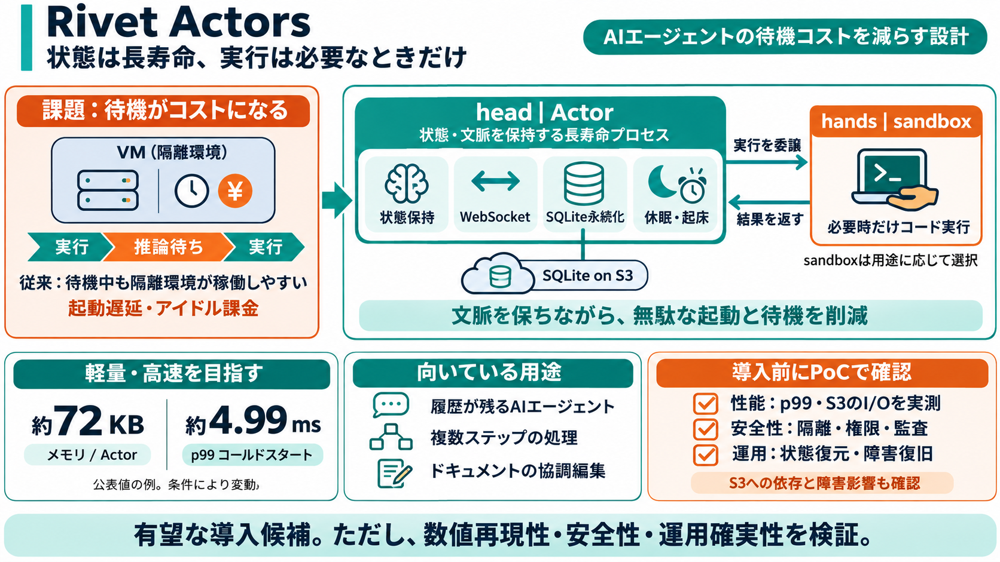

Rivet open-sources actor-based agent orchestrator built on S3 | AI Weekly
## TL;DR Rivet, a YC F25 project, released an actor-model orchestrator for agent workloads under Apache 2.0, with SQLi…

Rivet Actorsは、状態（in-memory state）とリアルタイム通信、SQLiteによる永続化、スケジューリングを“長寿命プロセス”として束ね、AIエージェント運用の待ち時間と起動コストを減らす設計です。
目標：サンドボックス（隔離実行）の“毎回起動”を避け、必要時だけ委譲することで、推論待ちの無駄を削る。 head（状態） / hands（実行）
多くのAIエージェントは、計算よりも「推論待ち（待機）」の時間が支配的です。従来はその間も隔離環境（VM/サンドボックス）が“課金されやすく”、無駄が残ります。
Rivetの中心思想は「head（状態・文脈）を長寿命側に置き、hands（コード実行）は必要なときだけサンドボックスへ」です。これにより、会話やワークフローを途切れさせずに“無駄な起動”を減らします。
Actorは、状態（in-memory state）、WebSocket、SQLiteによる永続化、そしてスケジューリング（必要時に起床）を一体として持ちます。組み合わせ前提なので、運用上の“部品を自前でつなぐ負担”が減る狙いです。
READMEベースでは、Actorあたりのメモリ約72KB、p99のコールドスタート約4.99msが示されています。高密度にActorを並べても性能を崩しにくい、という主張です。
データはS3上のSQLite（SQLite on S3）で管理されるとされます。S3性能を前提に、durable write/readの低レイテンシ例も挙げられ、クラスタリングしてもスケールしやすい設計を目指します。
Rivetの主張は、head（状態・文脈）をActor側に置き、必要なときだけsandboxへ接続することで、隔離環境がアイドルでも動き続ける無駄を減らすことです。結果として、時間・コストの両面で優位性を狙います。
Rivet Actorsは、再起動しても履歴が残る“耐障害”なエージェント、やり直し可能なマルチステップ処理、AI-generated appsの実行、ドキュメント単位の協調編集に向きます。
Rivetは“信頼境界（trust boundary）やblast radiusを制限する”方向性を示しますが、隔離方式の強度・権限の粒度・監査の設計などは、この抜粋だけでは断定しにくいです。
提示情報はREADMEベースの主張中心のため、同時接続数、Actorの状態サイズ、ネットワーク条件、ワークロード特性により数値は変わる可能性があります。自社PoCでp99レイテンシとI/Oを測るのが安全です。
サンドボックスはワークロードに合わせて選べる、とされています。頻繁に不要なら不要、必要なら軽量sandbox、さらに既存sandboxをツールとして統合する選択肢があります。
hibernationや再配置のような運用要素は語られる一方、監視（例：OTel設計の具体）、データ移行・バックアップ、リカバリ手順の詳細は不足している可能性があります。意思決定には“運用の型”が必要です。
Rivetの提案は、コールドスタートや待機中の無駄課金、状態管理の難しさに正面から取り組む点で説得力があります。一方で、セキュリティ境界・障害時の振る舞い・ベンチマーク条件の厳密さは追加確認が必要です。
本デッキは、主にrivets-dev / rivetのREADME等の概要から要点を圧縮して整理したものです。
用語メモ（bilingual）：cold start（コールドスタート） / hibernation（休眠） / trust boundary（信頼境界）
## TL;DR Rivet, a YC F25 project, released an actor-model orchestrator for agent workloads under Apache 2.0, with SQLi…
## TL;DR Rivet, a YC F25 project, released an actor-model orchestrator for agent workloads under Apache 2.0, with SQLi…
| Name | Name | Last commit message | Last commit date | --- --- | | cloudflare | cloudflare | | | | infra/azure | i…
| KV Persistence | Built-in KV storage for Actors | KV supported for Durable Objects | Key-value storage enables persist…
Image 31: lockGet insights and benchmarks for competitors of 2M+ companiesSign up today! Looking for more details on Ri…